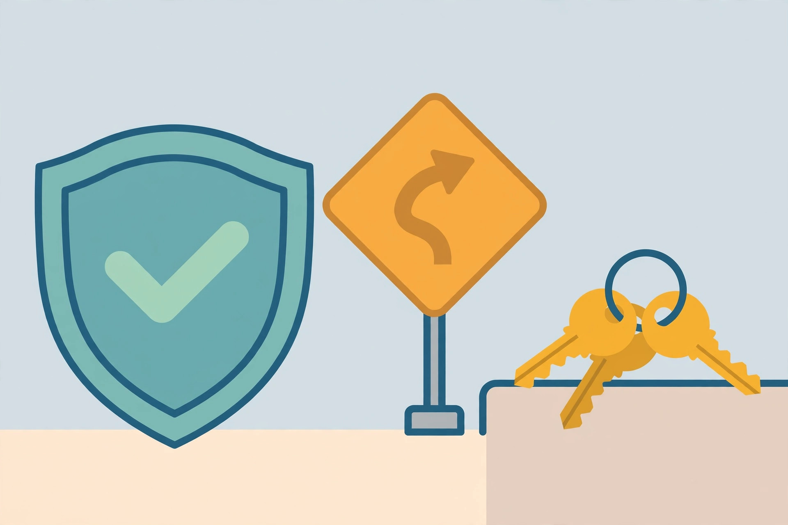

What gets affiliates banned: prohibited promotion methods in AI program terms

Most affiliates who lose an account did not set out to defraud anyone. They ran an ad the program considered brand bidding, bought their own subscription through their own link to “test the tracking,” or put the product’s name in a domain — and discovered the rule only when the commissions vanished. The uncomfortable truth is that the rules were published the whole time, inside program terms that promoters accept and almost never read. They also differ sharply between programs: conduct that one program ignores can be an account-ending offence at another, and the penalties are written down too — commissions removed, commissions revoked in full, accounts cancelled without refunding payments.
This guide works through the prohibitions in the official terms of programs listed in this directory — Rytr, Pabbly, ClickUp, and Bolt, all checked on 2026-10-16 — organised by method, so you can check your own promotion against the strictest version of each rule before a program checks it for you.
Self-referral: the one rule almost every program shares
If there is a universal prohibition in this directory, it is this one: you cannot earn by referring yourself. Rytr states it without decoration — self-referral is strictly prohibited, the program exists to incentivise referring others, and it is not a method of obtaining a discount on your own account. Pabbly’s terms say the same: buying through your own affiliate link earns no credit or commission, even if an automatic notification suggests a sale occurred, and no commission is generated at all where the affiliate’s custom domain and the end-user’s are the same. ClickUp’s affiliate page lists self-referrals — referring yourself or your own organisation — among the conditions that disqualify a referral from credit, and Bolt’s support documentation notes that you cannot use your own referral link and that its referral partner reviews referrals for signs of fraud, expressly including self-referral, which can delay or cancel a reward.
The penalties escalate beyond “that one commission does not count.” Under Rytr’s clause 5.2, any commission earned on a self-referral is voided and leads to cancellation of the affiliate account — the whole account, including commissions earned legitimately from other readers. Treat self-referral the way the strictest terms treat it: not a grey area, not a harmless tracking test, but the single cheapest way to lose a program relationship. If you need to test that a link works, test the click and the landing page; completing a purchase through your own link is the one test the terms forbid.
Paid ads and brand keywords: where programs diverge sharply
Paid promotion is where assuming “industry standard” rules gets expensive, because Rytr’s terms are far stricter than the norm. Clause by clause: running any ads on Google is prohibited, the program says its software can detect it, and associated commissions are removed; clause 1.1 adds that the account will be blocked. Ads on branded keywords are prohibited on Facebook, Instagram, and similar channels as well — and the definition of a branded keyword is broad, covering combinations such as the brand name plus “pricing,” “review,” or “comparison.” Running sponsored ads on brand keywords leads to cancellation of the account without refunding any payments. Even affiliates who advertise legitimately on search carry a duty: negative keywords for the brand must be set on Google and Bing so their ads do not surface against it.
Notice what this means practically. A promoter running a small Google campaign for their own review site — never mentioning the product in the ad at all — is still in breach of Rytr’s clause 1.1, because the ban is on Google ads, full stop, not merely on brand ads. The equivalent behaviour is not prohibited in the published terms of Pabbly, ClickUp, or Bolt checked for this guide, which is precisely the trap: experience earned in one program teaches rules that another program punishes. The only safe generalisation is to read the advertising clauses of each program’s terms before spending anything on promotion for it.
Your domain, your placements, your content
Three quieter rules catch promoters who would never dream of running a fraudulent click. Brand in your domain: Rytr prohibits using its brand name, including misspellings, in the affiliate’s domain name; if found, the affiliate is asked to take it down and any commission, regardless of origin, is revoked. A fan site or a comparison domain built on a product’s name is a liability, not an asset, under terms written this way. Where links may live: Rytr’s terms also restrict affiliate links to the affiliate’s own sites, and prohibit promotion on inappropriate websites — defined to include sites with defamatory, violent, adult, or offensive content, or content violating third-party rights or applicable laws. ClickUp’s guidelines reach the same places from the other direction: do not use the affiliate link on sites with adult or illegal content, do not use fraudulent marketing tactics, and do not abuse the program. Whose referral counts: ClickUp also disqualifies referrals where the customer is already a user, and where the customer’s last touch before signing up was another paid marketing touchpoint — a reminder that volume bought through other paid channels can produce sign-ups the program will not credit, however genuine they look in your own analytics.
Cookie stuffing and fake clicks: fraud, not a grey area
One category sits apart from the rule-reading above because it is not a terms dispute; it is fraud. Cookie stuffing means setting an affiliate tracking cookie in a visitor’s browser without a genuine referral click — typically through pop-ups or hidden loads — so the stuffer claims credit for sales they did nothing to create. Programs prohibit it as fraudulent, and the consequences have historically gone beyond account closure: Wikipedia’s account of the practice records that a prominent eBay affiliate was convicted of wire fraud in 2014 over cookie stuffing, receiving a five-month federal prison sentence and a $25,000 fine. The same principle covers its modern cousins — forced clicks, hidden frames, bots, and any mechanism that manufactures the appearance of a referral. ClickUp’s plain-language bar on “fraudulent marketing tactics,” together with its right to reject fraudulent sign-ups, and Bolt’s fraud review of suspicious sign-up patterns, are the directory’s visible edge of a rule every serious program enforces, whether or not its public page spells out the technique’s name.
Who bans what, and what it costs: the terms compared
Every entry below comes from the program’s official terms or program page as checked on 2026-10-16. An empty cell means the published terms checked for this guide do not state the rule — not that the behaviour is safe there.
| Method | Rytr | Pabbly | ClickUp | Bolt |
|---|---|---|---|---|
| Self-referral | Strictly prohibited; commission voided and account cancelled | Strictly prohibited; no credit or commission | Referral does not qualify for credit | Own link cannot be used; fraud review can delay or cancel rewards |
| Google ads (any) | Prohibited; commissions removed, account blocked | — | — | — |
| Ads on brand keywords | Prohibited, incl. brand + pricing/review/comparison; account cancelled without refunding payments | — | — | — |
| Brand name in affiliate’s domain | Prohibited incl. misspellings; all commissions revoked | — | — | — |
| Adult / illegal / inappropriate placements | Prohibited | — | Prohibited (adult or illegal content) | — |
| Referral-source proof on demand | — | Yes: screenshots/links or customer confirmation; program may contact affiliate anytime to verify | All referrals subject to verification | Referrals reviewed for fraud signs |
The last row deserves a promoter’s attention because it creates a duty most never notice. Pabbly’s terms make word-of-mouth and personal referrals count as verified only when the affiliate can support the source — screenshots or links evidencing it, or confirmation from the referred customer — and the program reserves the right to verify a referral source at any time. In practice that means keeping the same kind of placement log described in this site’s tracking guide: where each link ran, when, and in what content. If a program asks where a conversion came from and the honest answer is “somewhere on the internet, probably,” the commission is at risk even though the promotion was entirely legitimate.
Before you publish: a compliance decision framework
Run four questions against the strictest applicable terms — the terms of the specific program you are promoting, read fresh, not remembered from another program. Am I the buyer anywhere in this chain? If your own purchase, your own organisation, or your own domain touches the referral, stop: that is the fact pattern four out of four programs here punish. Does any paid promotion touch this program? Check the program’s advertising clauses before spending: does it ban search ads outright, ban brand keywords, require negative keywords, or say nothing? Price the campaign only after that answer exists. Does the product’s name appear in my domain, my page titles presented as the brand, or my ad copy as if I were the brand? Domain use is an explicit revocation trigger in the strictest terms here, and brand confusion is the theme behind the keyword bans as well. Could I prove where each referral came from? If the program demanded source evidence next month, your placement log should answer it in minutes. A campaign that passes all four questions against the program’s current terms is as safe as promotion gets; a campaign that fails one is a bet that the program will not check, made with your whole account balance as the stake.
Important: terms change, and the program’s version governs
This guide summarises official program terms checked on 2026-10-16; Rytr’s terms, for example, state they may be modified at any time, and other programs reserve similar rights. Nothing here is legal advice, and a program’s current terms — not this summary — decide any real dispute. Re-read the terms of any program before a major campaign, and keep dated copies of the version you relied on.
FAQ
Can I buy a tool through my own link just to test that tracking works?
That is exactly the conduct the terms name. Rytr voids the commission and cancels the account; Pabbly pays no credit; ClickUp disqualifies the referral; Bolt’s fraud review can cancel the reward. Test the click and the landing page instead, and stop before purchase.
Is brand bidding banned by every program?
No — and that is the risk. Rytr bans brand-keyword ads explicitly and extends the ban to combinations like brand plus “review,” alongside a total ban on Google ads. The other programs’ published terms checked here state no equivalent ad ban. Assume nothing: the rule that applies is the one in the terms of the program you are promoting.
What happens to commissions I earned honestly if I break a rule on one campaign?
Under the strictest terms here, they are exposed: Rytr’s penalties include cancellation without refunding payments, and revocation of any commission, regardless of origin, for the domain-name violation. Programs write penalties at account level, not campaign level.
A program asked me to prove where a referral came from. Is that normal?
Yes, where terms provide for it. Pabbly’s terms set out referral-source verification in detail, and ClickUp states all referrals are subject to verification. A placement log — where each link ran and when — is the practical way to answer.